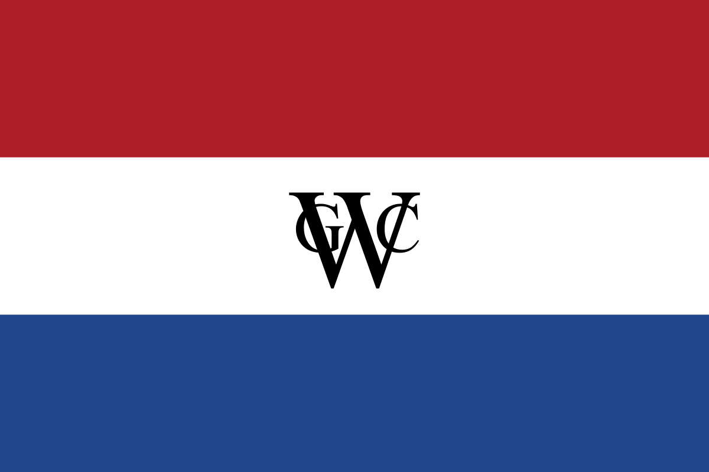

Ouro Branco e Companhias
Home
Açúcar
Companhia das Índias
Referências
Porque o
açúcar
era chamado de ouro branco?
Você conhece a
Companhia das Índias
?

E quem foi
Maurício de Nassau
?
© TODOS OS DIREITOS RESERVADOS
Gustavo Emanuel de Paulo Aciole Pequeno e Gabriel Servulo Nogueira- 1º Ano- INFO/2021